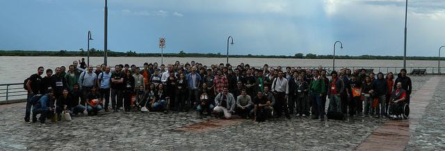

Amazon Permission denied (publickey)
El otro día tenía que hacer un deploy de una aplicación en el servidor de un cliente en amazon. Al intentar acceder por ssh, recibía como respuesta "Permission denied (publickey)".
No podía acceder de ninguna otra manera. Tuve que hacer algunos pasos y pude solucionarlo.
Mi problema era que alguien cambio los permisos del home, incluyendo el directorio ~/.ssh/.
Aplicaciones para servidor de Conectar Igualdad
Ya esta libera el CD de instalación para los servidores del plan Conectar Igualdad.
Este proyecto, lo realizamos cuando trabajaba en la Coopetativa de Trabajo Devecoop Ltda. Surgio de la necesidad de las escuelas, de tener disponible en la intranet de los colegios aplicaciones como wordpress, Moodle, etc. Pero como no todas las escuelas tienen internet, se tuvo que buscar otra solución.
El CD se va a repartir en las escuelas oficialmente, pero desconozco cuando.
PyCon-AR 2013
El jueves 24 y viernes 25 de octubre estuve en Pycon Argentina. Este año se realizo en rosario y estuvo muy interesante.
Es el 5° año consecutivo que se realiza en Argentina. el Año pasado se realizo en Quilmes y pude participar ayudando en la organización.
Pueden ver las fotos en la wiki.
Entre las charlas que más me gustaron o me sirvieron están:
Back
Volvi a tener blog, esta vez, probando Nikola.